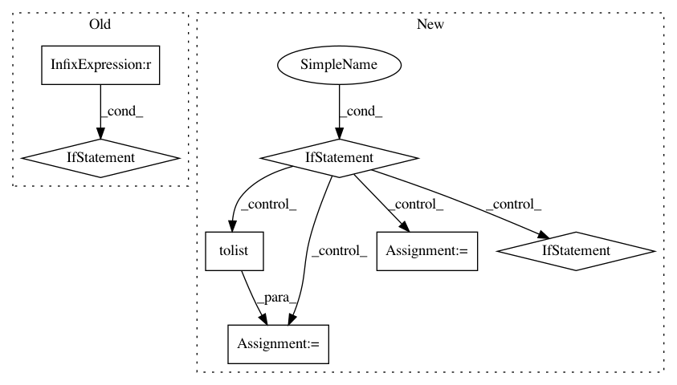

9d941d30962c211971ec316bf40c2ebfbf28a567,src/orion/analysis/lpi_utils.py,,lpi,#Any#Any#Any#Any#Any#,64
Before Change
type_requirement="numerical",
shape_requirement="flattened",
)
if trials.empty or trials.shape[0] == 0:
return pd.DataFrame(
data=[0] * len(flattened_space),
index=flattened_space.keys(),
columns=["LPI"],
)
data = to_numpy(trials, space)
data = flatten_numpy(data, flattened_space)
model = train_regressor(model, data, **kwargs)
best_point = data[numpy.argmin(data[:, -1])]
After Change
Last column is the objective predicted by the model for a given point.
Parameters
----------
point: numpy.ndarray
A tuple representation of the best trials, (hyperparameters + objective)
space: Space object
A space object from an experiment. It must be flattened and linearized.
model: `sklearn.base.RegressorMixin`
Trained regressor used to compute predictions on the grid
n_points: int
Number of points for each dimension on the grid.
grid = numpy.zeros((len(space), n_points, len(space) + 1))
for i, dim in enumerate(space.values()):
grid[i, :, :] = point
grid[i, :, i] = numpy.linspace(*dim.interval(), num=n_points)
grid[i, :, -1] = model.predict(grid[i, :, :-1])
return grid
In pattern: SUPERPATTERN
Frequency: 3
Non-data size: 7
Instances
Project Name: Epistimio/orion
Commit Name: 9d941d30962c211971ec316bf40c2ebfbf28a567
Time: 2021-02-24
Author: xavier.bouthillier@umontreal.ca
File Name: src/orion/analysis/lpi_utils.py
Class Name:
Method Name: lpi
Project Name: danforthcenter/plantcv
Commit Name: 96c26bd09d02bb9cddbc083c75ba2ea65b5d377a
Time: 2020-07-16
Author: noahfahlgren@gmail.com
File Name: plantcv/plantcv/color_palette.py
Class Name:
Method Name: color_palette
Project Name: sony/nnabla
Commit Name: edd86f6318b411a42a1f287fa6359bbfd12fa71c
Time: 2019-06-24
Author: stephen.tiedemann@sony.com
File Name: python/src/nnabla/functions.py
Class Name:
Method Name: scatter_nd